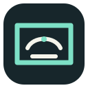

Before
Screenshot. Switch. Paste.
A chart, document, or code editor
↗ Take a screenshot
↗ Take a screenshot
Switch to chat
Paste image
Type question
Paste image
Type question

Share a screen, window, or tab. Ask a question. Read the answer in a floating panel.
Get the previewThis preview shares a screen, window, or tab after the browser permission prompt. It sends one frame and your question to configured provider only when you press Ask. Your API key stays in local browser storage. API usage is billed to your account.
The extension is experimental. It does not monitor passively, stitch full pages, or connect to local coding-session bridge yet. Chrome or Edge 116+ is required.
Source and install instructions · 繁體中文